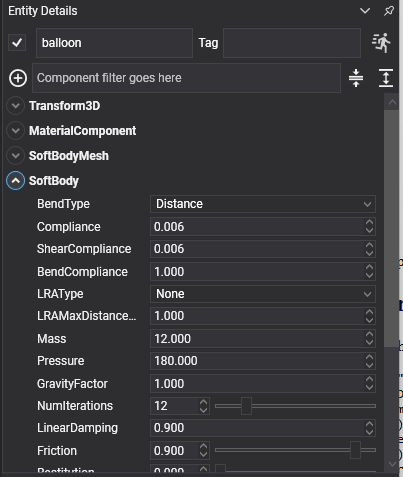
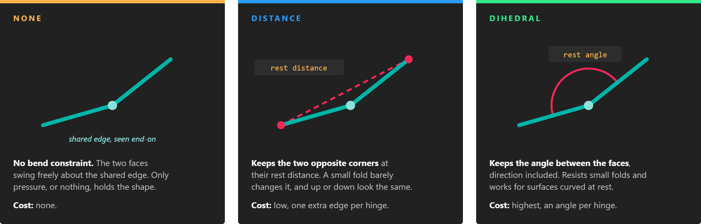
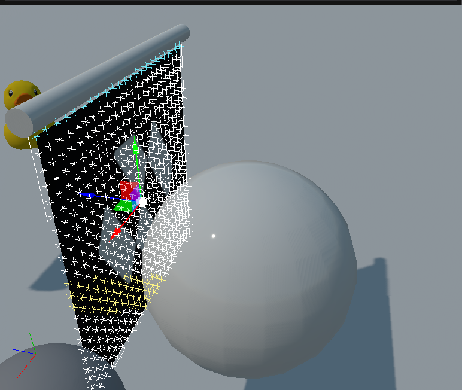
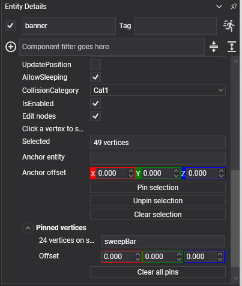
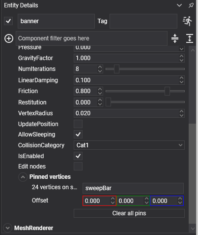

Soft Bodies
A soft body deforms. Cloth drapes and folds, a balloon squashes when it lands, a jelly wobbles and springs back. Where a rigid body has a pose, a soft body has a surface of vertices held together by constraints, and the solver moves every one of them.
This is entirely new in the Jolt-based physics; the previous API had nothing like it.
A soft body is two components, the same split as a mesh and a collider on a rigid body:
| Component | What it is |
|---|---|
SoftBodyMesh |
The shape: what surface it is and how it is drawn. |
SoftBody |
The behaviour: how that surface is simulated. |
Creating a Soft Body
Entity flag = new Entity("flag")
.AddComponent(new Transform3D() { Position = new Vector3(0f, 4f, 0f) })
.AddComponent(new MaterialComponent() { Material = clothMaterial })
.AddComponent(new SoftBodyMesh()
{
ShapeType = SoftBodyShapeType.Cloth,
GridColumns = 24,
GridRows = 22,
GridSpacing = 0.16f,
DoubleSided = true,
})
.AddComponent(new SoftBody()
{
Mass = 2f,
Compliance = 0f,
NumIterations = 8,
Friction = 0.8f,
VertexRadius = 0.02f,
})
.AddComponent(new MeshRenderer());
this.Managers.EntityManager.Add(flag);
Important
Soft bodies do not take part in collision events or in queries in this version. They collide with rigid bodies and with the ground, but a ray cast will not find one, and no CollisionStarted is raised for one.
SoftBody Component

The body simulates at the entity's world scale, the same way a rigid body scales its colliders: a cloth on an entity scaled by two is simulated twice as large. Changing the scale rebuilds the body from its rest shape, and a negative scale mirrors the surface.
Structure
| Property | Default | Description |
|---|---|---|
| Compliance | 0 | Inverse stiffness of the edges. Zero holds every edge at exactly its rest length, which is a rigid shell; a little slack is what lets a body squash and wobble. |
| ShearCompliance | 0 | The same for the diagonal edges, which is what resists the surface skewing. |
| BendCompliance | 1 | How easily the surface folds. Low makes stiff card; high makes limp fabric. Zero is a rigid plate. |
| BendType | Distance |
Which constraint resists folding: None, Distance or Dihedral. See Bending. |
| LRAType | None |
Ties every free vertex to its nearest pinned vertex, so cloth cannot stretch away from its pins: None, EuclideanDistance or GeodesicDistance. See Long-Range Attachments. |
| LRAMaxDistanceMultiplier | 1 | How far past its rest distance a vertex may get from its anchor. 1 is the rest distance, 1.05 allows five percent more. |
Changing any of these properties at run time rebuilds the body from its rest shape.
Physical
| Property | Default | Description |
|---|---|---|
| Mass | 1 | The total mass, spread over the vertices. |
| Pressure | 0 | Gas pressure inside a closed surface, holding it inflated. |
| GravityFactor | 1 | Multiplies the world's gravity for this body. |
| LinearDamping | 0.1 | Slows the whole body down. High values stop a wobble feeding itself. |
| Friction | 0.2 | Surface friction against other bodies. |
| Restitution | 0 | Bounciness. |
| VertexRadius | 0 | A skin around every vertex, which stops the surface grinding through thin geometry. |
| NumIterations | 5 | Solver passes per step. A heavy or a stiff soft body needs more or its surface jitters. |
| AllowSleeping | true | Lets it sleep when it stops moving. |
| CollisionCategory | Cat1 |
Which category it belongs to. |
| UpdatePosition | true | Whether the entity's transform follows the body. Turn it off for something pinned in place, like a hanging banner. |
Read-only
| Property | Description |
|---|---|
| VertexCount | How many vertices the surface has. |
| Volume | The volume it currently encloses. Comparing this against the rest volume is how you tell whether a pressurised body is holding its shape. |
| IsInWorld | Whether it has been created yet. |
| LRAConstraintCount | How many long-range attachments the body was built with. Zero when it has no pinned vertices. |
| GetLocalBounds() / GetWorldBounds() | Its bounds. |
| CopyVertexPositions(destination) | Reads the vertices out. |
| GetFaceIndices() | The surface's triangles. |
| VerticesUpdated | An event raised after each step. |
Bending
Every edge shared by two triangles is a hinge. Compliance and ShearCompliance keep the edges and the diagonals at their length, but a surface can keep every length and still fold along a hinge. BendType chooses the constraint that resists that fold, and BendCompliance sets how hard it resists.

One hinge seen end-on. Distance holds the line between the two outer corners, Dihedral holds the angle itself.
| BendType | What it holds | Cost | Use it for |
|---|---|---|---|
None |
Nothing. | None. | Bodies whose shape comes from Pressure, such as balloons and cushions, and fabric that should crumple with no stiffness at all. |
Distance |
The distance between the two corners opposite each shared edge. | Low: one extra edge per hinge. | Flat cloth: banners, flags, curtains and hammocks. This is the default. |
Dihedral |
The angle between the two faces, including which way it folds. | Highest: one angle constraint per hinge. | Surfaces that are curved at rest, such as meshes read from a model or open shells without pressure, and stiff sheets such as card, leather or rubber. |
The two constraints fold differently in two ways:
- Small folds. When a flat pair of triangles folds a little, the distance between the outer corners hardly changes. A
Distanceconstraint therefore pushes back weakly on small folds and firmly on large ones. Cloth still wrinkles easily, but it cannot crease sharply, which suits fabric.Dihedralresists in proportion to the angle, so small folds are resisted too. - Fold direction. A hinge folded up and the same hinge folded down by the same angle have the same corner distance. On a surface that is curved at rest,
Distancecan let a region snap through to its mirror image, for example a dent popping inward.Dihedralkeeps the rest angle and its direction, so a curved shell keeps its curve.
Note
BendCompliance measures a different thing for each type. For Distance it is the compliance of a length, for Dihedral of an angle, so the same value does not give the same stiffness. Tune BendCompliance again after changing BendType.
Long-Range Attachments
A hanging cloth stretches under its own weight. Each edge gives a little, and with many edges between a vertex and the pin, the stretch adds up. More vertices make it worse. Raising NumIterations helps but costs time on every step.
A long-range attachment ties every free vertex to its nearest pinned vertex and caps the distance between them at the rest distance times LRAMaxDistanceMultiplier. It only sets a maximum, so the vertex can still come closer: the cloth folds and swings freely, but it cannot sag past its rest length.
| LRAType | Rest distance measured | Use it for |
|---|---|---|
None |
No attachments. | Bodies without pins, and pinned cloth that may stretch. |
EuclideanDistance |
In a straight line to the nearest pinned vertex. | Flat cloth pinned along an edge, such as banners and curtains. |
GeodesicDistance |
Along the fabric, following its edges, to the nearest pinned vertex. | Cloth whose rest shape is curved or folded, or whose path to the pin goes around a hole or a corner. |
For a flat cloth pinned along one edge, both measures give the same result. They differ when the straight line leaves the fabric. The straight-line distance is then shorter than the fabric really is, so EuclideanDistance holds the cloth too tight and it cannot hang to its full length. GeodesicDistance is correct in every case.
Attachments need pinned vertices to anchor to. A body without any pin group gets no attachments, whatever LRAType says. The read-only LRAConstraintCount property tells you how many were created.
Pressure
A surface has no volume term of its own. What holds a hollow shape out is Pressure, and it needs one closed shell to push against. A mesh with separate pieces, holes or non-manifold edges has nothing to inflate, and lands flat however much pressure it is given.
Important
Pressure is not a pressure. It is the n of n·R·T, and the force the solver applies is that divided by the enclosed volume. It therefore cannot be copied between bodies of different sizes: the value that inflates a small balloon will tear a large tube apart. Scale it with the volume: matching a body of twice the volume means twice the number.
Pinning Vertices
A pin group fixes a set of vertices, optionally to another entity, so the rest of the surface hangs from them. A banner on a moving bar is one pin group naming the bar.
| Property | Description |
|---|---|
| PinGroups | A list of SoftBodyPinGroup. |
| NotifyPinsChanged() | Tells the body the pins have been edited. |
Each group holds:
| Field | Description |
|---|---|
| VertexIndices | Which vertices are pinned. |
| AnchorEntityPath | The entity that carries them. Empty pins them in world space. |
| AnchorOffset | An offset from that entity. |
// A cloth is generated row by row along Z, so index = z * GridColumns + x, and its top edge is
// simply the first row: 0 to GridColumns - 1.
var top = new SoftBodyPinGroup
{
AnchorEntityPath = "flagpole",
VertexIndices = Enumerable.Range(0, columns).ToList(),
};
softBody.PinGroups.Add(top);
softBody.NotifyPinsChanged();
Tip
Pinning to a kinematic body moved with MoveTo is what makes cloth react properly to being carried: the pins are given a real velocity, so the fabric streams and drapes instead of being teleported along with the anchor.
Pinning in the Editor
Writing vertex indices out by hand only works while the surface is a grid whose numbering you can
reason about. For anything else (a shape read off a model, a torus, one corner of a cube) the
SoftBody inspector has a picking mode.
Turn on Edit nodes. Everything below it appears with it. The vertices of the body are drawn in
the viewport as points, colour-coded:

The banner from the sample scene. The row along the top is cyan because it is pinned to the bar that carries it; the band across the middle is yellow because it is selected; the rest are grey and free.
| Colour | Meaning |
|---|---|
| Grey | Free. The solver moves it. |
| Orange | Pinned in world space. |
| Cyan | Pinned to an entity, so it is carried by that entity. |
| Yellow | Currently selected. |
Select in the viewport. Clicking a vertex toggles it, within about twelve pixels, so a point does not have to be hit exactly. Dragging draws a rectangle and takes everything inside it. Holding Ctrl adds to the selection instead of replacing it; Shift is not used for this, because the viewport camera has it.
Then pin. With at least one vertex selected the panel shows what to do with it:

| Control | What it does |
|---|---|
Selected |
How many vertices the buttons below will apply to. It follows the rectangle live. |
Anchor entity |
The dot-separated path of the entity that will carry the group. Left empty, the vertices are held in world space. |
Anchor offset |
An extra offset from that entity, on top of the spacing the vertices already have. |
Pin selection |
Makes a new group out of the selection. |
Unpin selection |
Frees the selected vertices again. |
Clear selection |
Deselects, without changing anything. |
Every group that exists is listed under Pinned vertices, one row each, labelled by what it holds
rather than by a number, as in "24 vertices on sweepBar".

With Edit nodes off, the groups are still listed and still editable: it is only the viewport picking
and the buttons that go away. Each row's field is that group's anchor path,
so a group can be moved onto a different entity by typing the new path over it.
Important
Clear all pins is there because changing the shape renumbers the vertices. A pin group is a
list of indices into the surface, and changing ShapeType, GridColumns, GridRows or the source
model regenerates that surface, so the indices survive and now point at completely different
vertices. Starting the groups over is the way out.